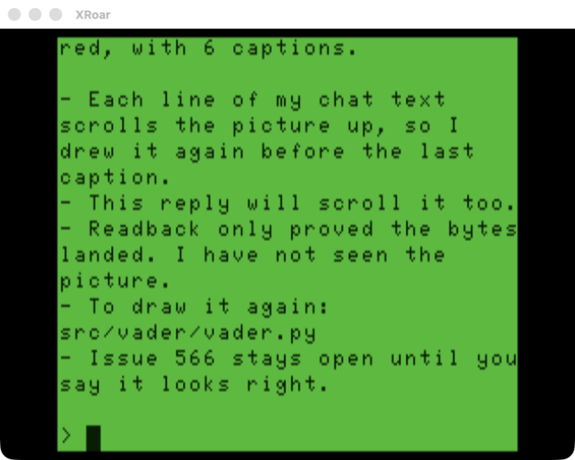
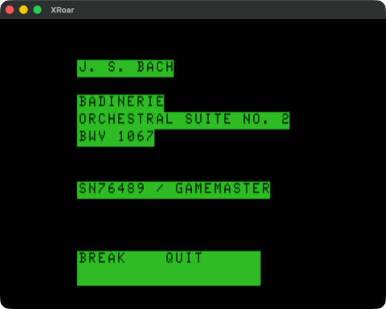
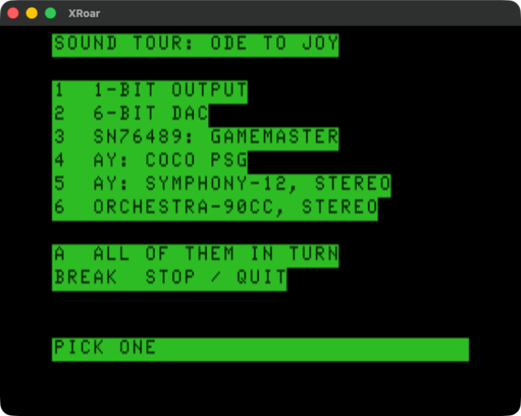
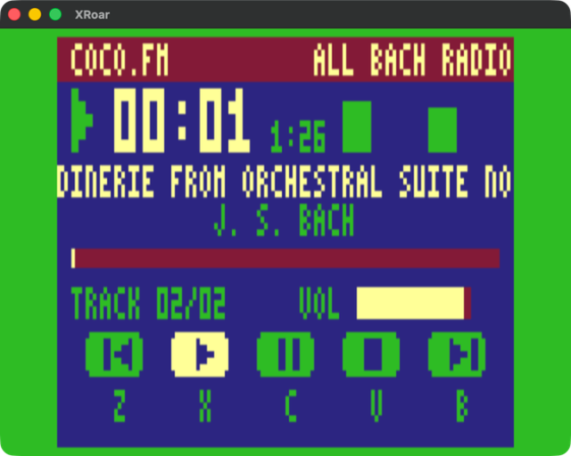

The tutorial builds up to a guessing game; the demos go the rest of
the way. Each is a self-contained Forth program in
src/, built with the same fc.py
toolchain, and each was written to exercise a particular corner of
the CoCo — beam-racing, artifact colour, semigraphics, the two
audio paths, the cartridge sound chips, the FujiNet clock. Every one
ships on a disk: build/demos.dsk, or for the sound demos
build/sound.dsk (see the
disk build guide). A few
need hardware beyond the CoCo itself; their entries say what.
The screenshots are captured from XRoar. Click any source & README link to read the code.
Start Here

Hello World
The minimal kernel smoke-test. Prints
BARE NAKED FORTH followed by the kernel version to
the VDG text screen with EMIT, then waits for the
BREAK key to return cleanly to BASIC.
Games & Graphics

Bare Naked Tetris
A full Tetris game in ~555 lines of Forth on a 32×16 SG4 display: a 10-wide playfield plus an info panel with score, lines, next-piece preview, and high scores. Includes collision detection, cascade line-clearing, scoring, difficulty progression, delayed auto-shift key repeat, and hard/soft drop.

Bounce — HSYNC Sprite Testbed
Four 7×7 artifact-colour balls bounce around a 128×192 RG6 screen while you switch between three rendering modes — free-running, VSYNC-only, and VSYNC+HSYNC beam-chasing — to see the difference in tearing. A HUD shows the current blanking offset and mode, adjustable with the arrow keys.

Kaleidoscope
A four-way symmetric pattern generator on a 64×32 SG4 pixel grid. Each step picks a random position and plots it mirrored across both axes, using all eight CoCo colours with a 75% plot / 25% erase ratio so patterns build up and slowly recycle.

Matrix Rain
A Matrix-style digital rain: 32 independent character streams fall at varying speeds down the VDG text screen. Each stream has a bright inverse-video head, a dimmer trail of randomly mutating characters, and a black erasing tail.
Text & Interaction

Typewriter
A bare-metal keyboard echo test that types
characters to the VDG screen with a visible block cursor and full
cursor movement — no BASIC ROM dependency. Handles printable
echo, ENTER, CLEAR, backspace, arrow-key movement, and BREAK to
exit; a bundled kbdtest.fs also shows each key's hex
code.

Calculator
An infix integer calculator with an on-screen keypad. A red pixel-font display shows the running value while single-character inverse-video button labels flash on keypress. Supports the four operators, chained operations, clear, and a memory store/recall.

Claude Code Terminal
A dumb terminal that lets you talk to Claude Code on a Mac from the CoCo keyboard. Replies come back in true lowercase, wrapped to 32 columns, and Claude can read and write the CoCo’s memory, so it can draw on the screen in SG4 semigraphics.
Display & Colour

VDG Mode Tour
Cycles through all eleven MC6847 display modes (Alpha, SG4, SG6, CG1–6, RG1–6), showing each mode's name plus a representative pattern — colour bars, bands, or checkerboards — rendered with whatever technique that mode supports. Press any key to advance.

RG6 Pixel & Sprite Test
A stepped test harness for the RG6 artifact-colour pixel, line, and sprite libraries. Advancing with a keypress, it draws colour bars (shown), a fan of colored lines (white/blue/red by slope), sprite draw/erase, and a rotating trig-driven line sweep, all on a 128×192 RG6 screen under NTSC artifacting.

Colored RG6 Text
A diagnostic swatch for the copy-mask
colored-text feature. Prints the same line of RG6 artifact text
three times, once per colour mask
($FF/$55/$AA), so the
mask-to-colour mapping (white/blue/red) can be eyeballed. The
$FF row doubles as a white-output regression
check.
Telling Time

Analog + Digital Clock
A future-retro wall clock that fetches the time
from a FujiNet RTC, then smoothly sweeps three hands across an
oval artifact-colour face drawn from 24 line segments, with
quarter ticks and pip markers. A digital
YYYY.MM.DD / HH:MM:SS readout sits below,
and an "RTC SYNC" flash fires on the once-per-minute
re-sync.
FujiNet Time
Fetches a 6-byte date/time block from the
FujiNet device over the cartridge's bit-banger DriveWire driver,
then formats and prints it as
YYYY.MM.DD HH:MM:SS on the VDG text screen. A
focused test of the FujiNet time path.
Sound

DAC Sound
An interactive tone-and-effect showcase for the
6-bit DAC at $FF20 — the audio path BASIC's
SOUND uses, driven directly from Forth
CODE words. Keys trigger square/saw/triangle/sine
tones and named effects (beep, zap, boom, chirp, dock, hit) via a
KEY dispatch.

1-Bit Sound
Exercises the CoCo's second audio path — the
single-bit output at $FF22 bit 1, mixed into the same
bus as the DAC. Keys play square tones, an ascending sweep, a
click train, and a noise burst, plus an A/B key that plays the
same tone through the DAC then the 1-bit path for direct
comparison.

Async Sound Engine
A showcase of the non-blocking sound engine: every effect is produced cooperatively one sample at a time, so an on-screen marker keeps animating and the keyboard stays live while sound plays. Keys trigger tones, sweeps, noise, ring-modulated bell/gong timbres, and queued multi-note effects.
Cartridge Sound

Bach’s Badinerie on the SN76489
The last movement of Bach’s Orchestral Suite No. 2, hand transcribed for three square-wave voices and noise percussion, with a researched performance: tempo, terraced dynamics and voicing.

Sound Tour
One phrase, the opening of the Ode to Joy, played on every sound option the project drives so the voices can be compared side by side: the 1-bit output, the 6-bit DAC, the SN76489, the CoCo PSG, the four-chip Symphony-12 in stereo, and the Orchestra-90.

COCO.FM Jukebox
A laid-back radio player: it plays every .SNG and .VGM song on the disks in drives 0-3, shuffled, one after another, on a 90s MP3-player screen in CG2 with Winamp-style keys, volume and seeking.